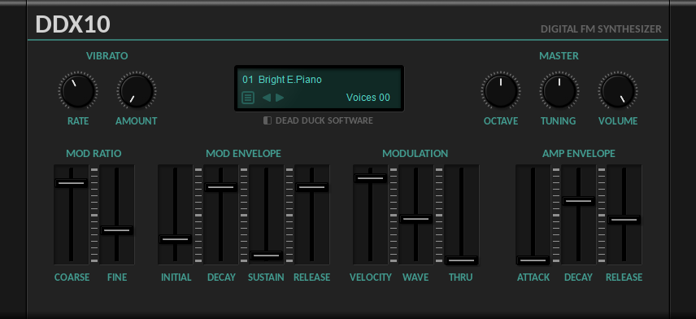

DDX10 Synthesizer¶
DDX10 is an FM synthesizer plugin in VST 2.4 format for Windows 32-bit and 64-bit hosts.
It is based on the mda DX10 synth and features a simple FM-synthesis programming model where the main signal (the carrier) is modulated by a second signal (the modulator). DDX10 supports polyphonic playback with up to 32-voices.
The following sections describe the synthesizer controls available.
Vibrato¶
Rate - set the vibrato frequency. This is an additional level of frequency modulation outside of the main FM synthesis operation and can be used to add more gentle pitch modulation effects.
Amount - set the vibrato depth (note that heavy vibrato may also cause additional tone modulation effects).
Mod Ratio¶
Coarse - set the modulator frequency as a multiple of the carrier frequency.
Fine - set the fine control of modulator frequency for detuning and inharmonic effects.
Mod Envelope¶
Initial - set the initial modulator level.
Decay - set the time for modulator level to reach the sustain level.
Sustain - set the final modulator level.
Release - set the time for the modulator level to reach zero.
Modulator¶
Vel - set the velocity control of the modulation level.
Wave - set the ‘richness’ of the modulator waveform (adds extra harmonics).
Thru - set the amount of the modulator added to the output signal.
Amp Envelope¶
Set the Attack, Decay and Release times for the amplitude envelope.
Master¶
Octave - set the master tuning.
Tuning - set the fine tuning.
Volume - set the master volume.
Credits¶
DDX10 is based on code developed by mda and released under the MIT license, copyright © 1999-2008 by Paul Kellett. See the licensing files included in the Instrument Bundle for more details.